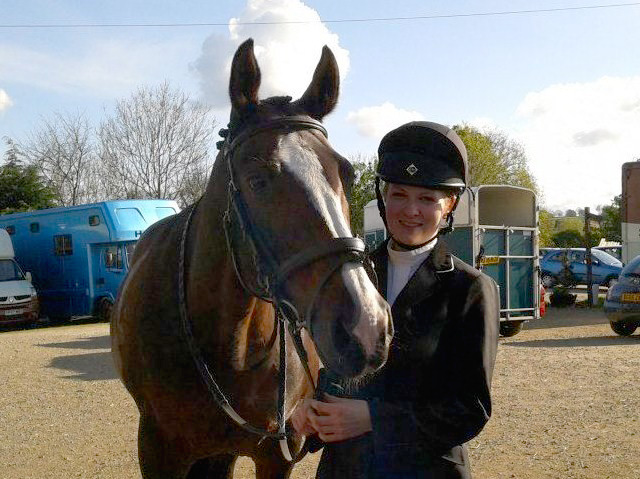

Starting weekly lessons with the local riding school at 8 years old soon developed in to spending every spare second I had either riding or caring for the horses!
From then I have worked on a number of yards, giving me great experience with a wide variety of horses, from pleasure to top competition horses, as well as young stock, broodmares and rehabilitative cases.
Rehabilitation has been a real area of interest for myself. I have brought a number of horses back into work from injury and lack of fitness, and during this time have seen the major benefits that various forms of physiotherapy can have.
After my A levels, I went on to complete my BSc (Hons) in Equine Sports Science. After seeing for myself the great benefits that sports massage can have on horses (and humans after having the therapy myself!), I went on to complete a diploma in Equine Sports Massage Therapy.
I am a fully insured therapist covering Yorkshire and the surrounding area. I work closely with vets and farriers in order to achieve the best possible results for your horse.